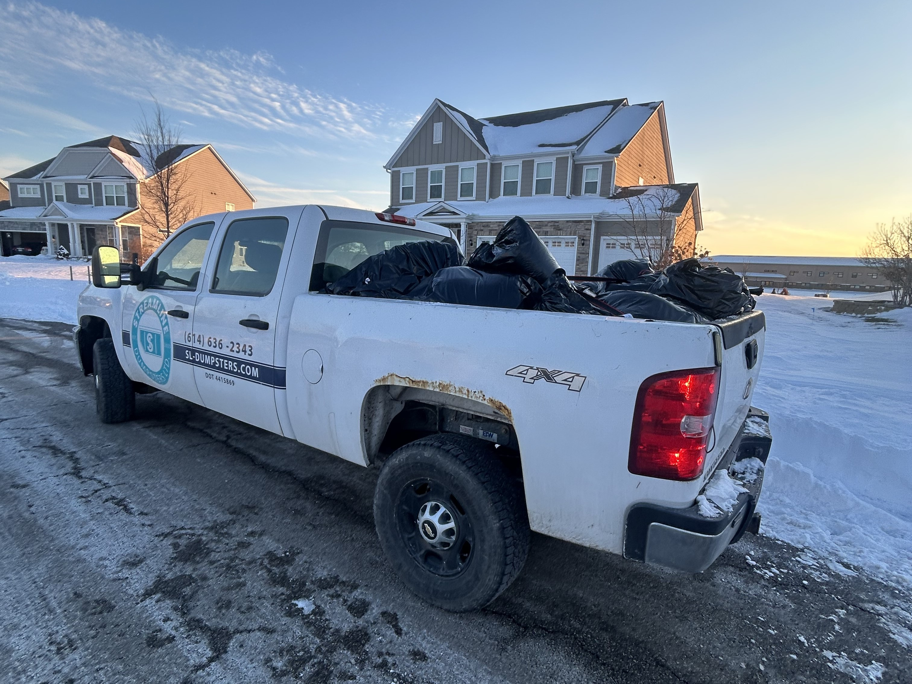

Junk Removal vs Dumpster Rental: Which Do You Need?
Two services, two very different experiences. One means you do the work. The other means we do it for you. Here's how to know which option is right for your project—and why the answer might not be what you expect.

A homeowner in Powell called me last winter with a question I hear all the time: "Do I need junk removal or a dumpster?"
She was clearing out her parents' basement after they moved into assisted living. The basement was packed—thirty years of accumulated furniture, boxes, holiday decorations, old appliances, and everything else that had migrated downstairs over three decades.
"I don't even know where to start," she told me. "My husband has a bad back. I can't lift most of this stuff. And honestly, I don't have the time or energy to spend a whole weekend hauling things. I just want it gone."
I told her: "That's exactly what junk removal is for. We come in, we carry everything out, we load it up, and we haul it away. You point at what goes, and we do the rest."
She was relieved. "I thought I'd have to rent a dumpster and do all the work myself. This is so much easier."
It was—for her situation. But here's the thing: if she'd been doing a kitchen renovation with a contractor, a dumpster rental would have made more sense. The right answer depends entirely on your project, your timeline, and how much work you want to do yourself.
Let me break down both services so you can make the right call for your situation.
The Fundamental Difference
Before we get into details, here's the core distinction:
Junk Removal vs Dumpster Rental at a Glance
Junk Removal: We do ALL the work. We come to your home, go inside, carry items out, load them onto our truck, and haul everything away. You don't lift a finger.
Dumpster Rental: We deliver an empty dumpster to your property. YOU fill it at your own pace over 3+ days. We come back to pick it up when you're done.
The simple question: Do you want to do the physical work yourself, or do you want us to do it for you?
Junk Removal: The Full-Service Option
Junk removal is exactly what it sounds like—we remove your junk. All of it. Here's what the experience looks like.
How Junk Removal Works
- You call or book online and describe what needs to go
- We schedule a time that works for your schedule
- We show up with a truck and crew
- You show us what goes - Walk us through the house, garage, basement, wherever the items are
- We do all the heavy lifting - We carry items out of your home, down stairs, through doorways, whatever it takes
- We load the truck and haul everything to proper disposal or recycling facilities
- You're done - The whole process typically takes 1-3 hours depending on volume
What We Can Haul Away
Our junk removal service handles virtually anything you need gone:
Furniture
- Couches, sofas, loveseats, recliners
- Tables, chairs, desks, bookshelves
- Bed frames, mattresses, box springs
- Dressers, nightstands, armoires
- Entertainment centers, TV stands
Appliances
- Refrigerators and freezers
- Washers and dryers
- Stoves, ranges, dishwashers
- Water heaters, dehumidifiers
- Window AC units
Construction & Renovation Debris
- Drywall, lumber, flooring
- Cabinets, countertops, fixtures
- Tile, carpet, and padding
- Post-renovation cleanup materials
Yard Waste & Outdoor Items
- Branches, brush, and landscaping debris
- Old fencing and deck materials
- Patio furniture, grills, play equipment
- Hot tubs (yes, we can handle those)
General Household Items
- Boxes, bins, and storage containers
- Electronics (TVs, computers, printers)
- Exercise equipment
- Clothing, books, toys, household clutter
What We Can't Take
Same prohibited items as dumpster rental—hazardous materials require specialized disposal:
- Liquid paint, solvents, and chemicals
- Asbestos-containing materials
- Medical waste
- Propane tanks
Junk Removal Pricing
Junk removal is priced by volume—how much space your items take up in the truck. The more you have, the more it costs. But you're paying for labor, transportation, and disposal all in one price.
Every job is different, so pricing depends on what you need hauled and how much there is. Call (614) 636-2343 to discuss your specific situation and get a clear quote before we start.
There are no surprise fees. The price I quote is the price you pay.
Dumpster Rental: The DIY Option
Dumpster rental gives you a container and time to fill it yourself. It's the right choice when you want to work at your own pace and handle the loading yourself.
How Dumpster Rental Works
- Book online or call to schedule delivery
- We deliver a 14-yard dumpster to your driveway with protection boards
- You fill it at your own pace over the rental period (3 days included)
- Call when you're done and we pick it up
For a complete walkthrough of the dumpster rental experience, see our first-time renter's guide.
Dumpster Rental Pricing
$319 + 8% tax = $344.52 total
Includes delivery, 3 days, up to 4,000 lbs, pickup, disposal, and driveway protection. Extensions available at $15/day. See our transparent pricing guide for complete details.
When to Choose Junk Removal
Junk removal is the better choice when:
You Can't or Don't Want to Do the Physical Work
This is the number one reason people choose junk removal over dumpster rental. If you have physical limitations, a bad back, or simply don't want to spend your weekend carrying heavy items to a dumpster, junk removal is the answer.
We go inside your home, carry items down stairs, navigate tight hallways, and load everything onto the truck. You don't touch anything you don't want to.
You Want It Done Today
Junk removal is fast. We show up, we load, we leave. Most residential jobs take 1-3 hours. By the end of the day, your space is clear.
With a dumpster rental, you're doing the work yourself over multiple days. If you need something gone now, junk removal gets it done in a single visit.
You Have a Manageable Amount of Stuff
Junk removal works best for specific items or a room's worth of clutter. A few pieces of furniture, a garage full of accumulated junk, a basement worth of old belongings—these are ideal junk removal jobs.
The Items Are Inside the House
Heavy furniture on the second floor. A washer and dryer in the basement. A piano in the living room. Old appliances you can't move yourself. When items are inside the house and difficult to carry out, our crew handles the logistics.
Common Junk Removal Scenarios
Post-Renovation Cleanup
Your contractor finished the remodel and left behind piles of debris, packaging, and old materials. You don't want to spend another weekend cleaning up after a project that already took weeks. We come in, grab everything, and leave you with a clean space to enjoy.
Garage and Basement Cleanouts
You've been putting it off for years. The garage is so full you can't park in it. The basement is stacked floor to ceiling. You know you need to deal with it, but the thought of spending multiple weekends hauling everything to a dumpster feels overwhelming.
Junk removal turns a weekend-long project into a few hours. We show up, you point at what goes, and we make it disappear.
When to Choose Dumpster Rental
Dumpster rental is the better choice when:
You're Doing the Demo Yourself
If you're tearing out a kitchen, ripping up flooring, or demolishing a deck, debris accumulates continuously over days. A dumpster sitting in your driveway lets you throw debris in as you work—no waiting for a pickup crew, no scheduling around someone else's timeline.
You Have a Multi-Day Project
Renovations, large cleanouts, and construction projects generate debris over time. A dumpster gives you a container for the entire project—fill it gradually as the work progresses over 3, 5, or even 10+ days.
You're Working with a Contractor
Contractors need a dumpster they can use continuously during demolition and construction phases. They'll fill it throughout the project as debris is generated. See our guides for kitchen and bathroom remodels and roofing projects.
You Want to Control the Pace
Some people prefer to sort through belongings at their own pace—keep, donate, trash—over several days. A dumpster gives you the flexibility to work when it's convenient without coordinating with a crew's schedule.
Cost Is the Primary Factor
If you're able and willing to do the physical labor yourself, dumpster rental is typically the more cost-effective option for larger volumes. The tradeoff is your time and effort—but for those who don't mind the work, the savings can be meaningful.
Side-by-Side Comparison
| Factor | Junk Removal | Dumpster Rental |
|---|---|---|
| Who does the work? | We do everything | You load it yourself |
| Time to complete | 1-3 hours (one visit) | 3+ days (your pace) |
| Physical effort | Zero—we lift everything | You handle all lifting/carrying |
| Interior removal | Yes—we go inside your home | No—you carry items to the dumpster |
| Best for | Immediate removal, heavy items, physical limitations | Multi-day projects, renovations, working at your own pace |
| Flexibility | Scheduled visit—done in one session | Fill anytime during rental period |
| Dumpster pricing | N/A | $344.52 (3 days, 4,000 lbs) |
Real Scenarios: Which Service Wins?
Let's walk through some common Columbus-area projects to see which service makes the most sense.
Scenario 1: Clearing Out a Deceased Parent's Home
The situation: A family needs to clear furniture, clothing, kitchenware, and decades of belongings from a 3-bedroom home in Dublin.
Best option: Junk removal. There are heavy items throughout the house—dressers, a sleeper sofa, a washer and dryer in the basement. The family doesn't want to spend weeks hauling things out. They want it done so they can move forward with selling the house.
We come in, the family walks us through what goes, and we clear the house in a single day. No renting a truck, no multiple dump runs, no asking friends for help carrying furniture down stairs.
Scenario 2: Kitchen Renovation Demo
The situation: A contractor in Hilliard is tearing out cabinets, countertops, flooring, and drywall over three days.
Best option: Dumpster rental. The contractor generates debris continuously throughout the demo phase. Having a dumpster on-site means they can throw debris in as they work—no waiting, no scheduling, no interruptions to their workflow.
A 14-yard dumpster handles the typical kitchen demo with room to spare, and the contractor works at full speed without debris piling up.
Scenario 3: Garage Cleanout Before Winter
The situation: A homeowner in Worthington wants to reclaim their two-car garage that's been taken over by 15 years of accumulated stuff.
Either option works—here's the deciding factor:
- Choose junk removal if you want it done fast, don't want to do heavy lifting, or need help getting large items out of the garage. We'll come in, load everything, and you'll be parking in your garage by dinnertime.
- Choose dumpster rental if you want to sort through everything yourself at your own pace over a weekend. You might find items to keep, donate, or sell—a dumpster gives you the time to make those decisions without a crew waiting.
Scenario 4: Post-Renovation Debris Cleanup
The situation: A bathroom remodel in Upper Arlington is complete. The contractor left behind scrap lumber, packaging, drywall scraps, and general construction debris.
Best option: Junk removal. The renovation is done—you don't need a dumpster sitting in your driveway for three days. You need the leftover mess cleaned up quickly so you can enjoy your new bathroom. We come in, grab everything the contractor left behind, and you're done.
Can You Use Both Services?
Absolutely. Some projects benefit from both services at different phases:
- Dumpster rental during renovation for contractor use during demo and construction
- Junk removal after renovation to clear out remaining debris, old furniture, and items you're replacing
Or the reverse:
- Junk removal first to clear out heavy furniture and appliances you can't move yourself
- Dumpster rental next for the renovation debris that will accumulate over the coming weeks
Since we offer both services, coordinating between them is simple—one call, one company, one person managing your project.
The Advantage of One Company for Both Services
Most companies offer one or the other—junk removal or dumpster rental. We offer both, and that matters for a few important reasons:
You Get the Right Service, Not the Only Service
A junk removal-only company will always recommend junk removal. A dumpster-only company will always recommend a dumpster. When you call me, I'll recommend whichever service actually makes sense for your situation—even if it means a lower-cost option for you.
That Powell homeowner clearing her parents' basement? Junk removal was the right call. If she'd called a dumpster company, they would have rented her a dumpster she'd spend weeks trying to fill by herself. If a contractor calls me about a renovation, I'm going to recommend a dumpster rental—not a more expensive junk removal service he doesn't need because his crew is already doing the labor.
Seamless Coordination
When you need both services for a project, everything goes through one point of contact. No coordinating between two companies. No conflicting schedules. No communication gaps. One call handles everything.
Someone Who Knows Your Project
When you work with me from start to finish, I understand your project. I know what's been done, what's coming next, and what service fits each phase. This context means better recommendations and fewer problems.
Quick Decision Guide
Choose Junk Removal If:
- You don't want to do any physical labor
- Items are inside the house (upstairs, basement, etc.)
- You have heavy items you can't move yourself
- You want everything gone today
- You have physical limitations
- You're cleaning up after a renovation or move
- It's a one-time removal, not an ongoing project
Choose Dumpster Rental If:
- You're doing the demo/work yourself and generating debris over days
- A contractor needs an on-site container for a renovation
- You want to sort through items at your own pace
- Your project will take 3+ days
- You're comfortable with the physical labor of loading
- Cost is the primary consideration and you have time available
Ready to Get Started?
Not sure which service you need? That's exactly what I'm here for. Call me and describe your project—I'll give you an honest recommendation based on what makes the most sense for your situation, timeline, and budget.
This business is my life, and I'd rather steer you toward the right service than sell you something you don't need. Whether that's junk removal, dumpster rental, or a combination of both, we'll figure out the best approach together.
Junk Removal
- Full-service: We go inside, carry everything out, load and haul away
- Pricing: Based on volume—call for a quote on your specific job
- Scheduling: Same-day and next-day service available
Dumpster Rental
- 14-yard dumpster: $319 + tax = $344.52
- Includes: 3 days, 4,000 lbs, delivery, pickup, driveway protection
- Same-day delivery: Book before 2 PM
- Book online: Quick online booking available 24/7
- Call to discuss your project: (614) 636-2343
Serving Dublin, Hilliard, Powell, Upper Arlington, Worthington, Plain City, and the greater Columbus area. One company for both services—because your project shouldn't require multiple vendors to get the job done right.